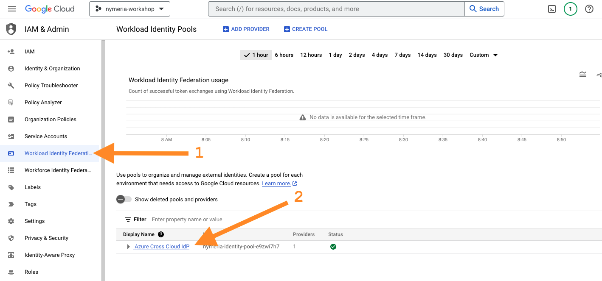
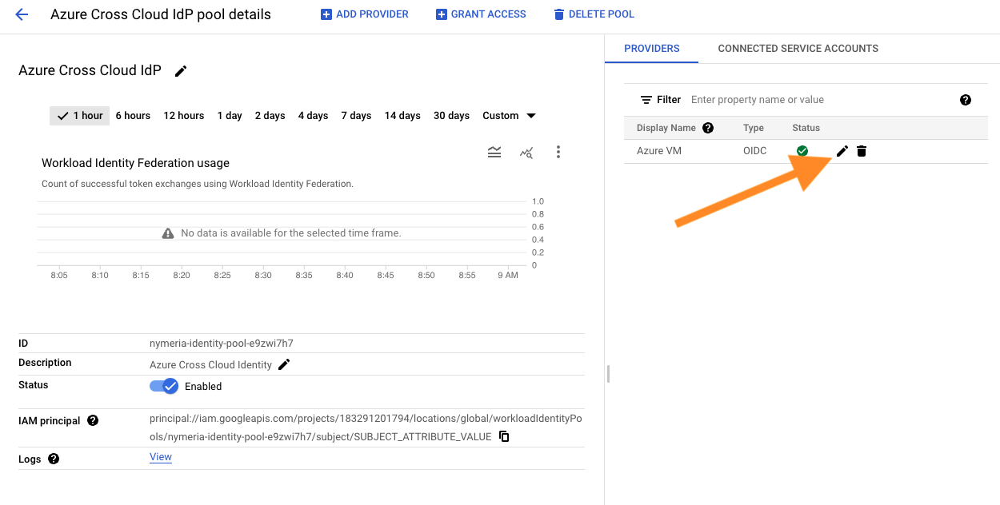
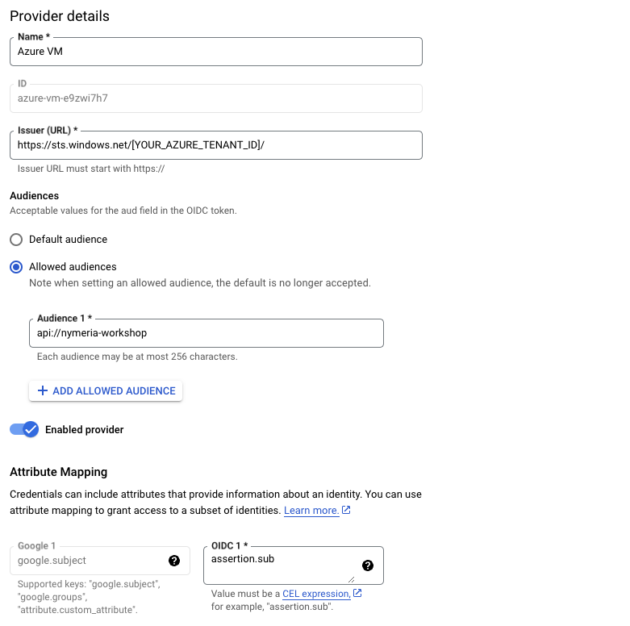
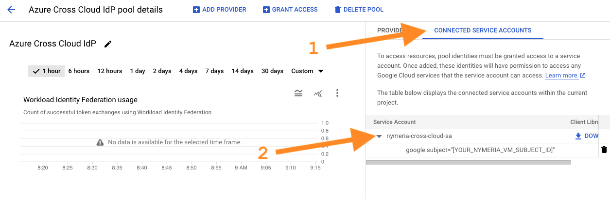

Google Cloud Workload Identity Federation
During the Getting Started section, you deployed the 03_gcp_init Terraform configuration to your Google Cloud project. The Google configuration includes an Workload Identity Provider resource that trusts your Azure Entra ID tenant and a service account with permissions to read data from the Nymeria GCS bucket. In this section, we will explore how the Workload Identity Provider configuration trusts the Nymeria virtual machine and confirm the virtual machine can impersonate the Google Cloud service account.
Google Cloud Workload Identity Provider
Inspect the Google Cloud Workload Identity Provider and Service Account configuration. Confirm the OpenID Connect token's subject, issuer, and audience claims match the values found in the Nymeria Virtual Machine Identity Token.
-
Sign into the Google Cloud Web Console again.
-
Navigate to the IAM service.
-
Select the Workload Identity Federation menu item from the left-hand menu. Then, open the Azure Cross Cloud IdP identity pool to view the details.

-
In the right window, Select the Azure VM identity provider to view the details.

-
Confirm the following configuration matches the Nymeria virtual machine's identity token. The configuration grants any identity token issued by the Azure Entra ID tenant to authenticate to the workload identity pool.
-
The Issuer (URL) matches the Nymeria virtual machine's identity token's
issclaim:https://sts.windows.net/[YOUR_AZURE_TENANT_ID]/. -
The Allowed Audiences includes one entry matching the Nymeria virtual machine's identity token's
audclaim:api://nymeria-workshop.

-
-
The Workload Identity Pool and Provider resources do not inherently grant access to impersonate a service account. Permissions are granted by connecting a service account to the identity pool. Press the back button to navigate back to the workload identity pool. Then, select the Connected Service Accounts tab in the right window. Expand the nymeria-cross-cloud-sa service account to view the identity pool principals with access to impersonate the service account.

-
Confirm the
google.subjectfilter restricts nymeria-cross-cloud-sa service account impersonation to the Nymeria virtual machine's managed identity.
Privilege Escalation Path
Misconfigured service account impersonation filters can allow privilege escalation vulnerabilities. Failing to apply a filter for a principal or principalSet can grant the entire workload identity pool service account impersonation.
Google Cloud Workload Identity
Use the Nymeria virtual machine's OpenID Connect token to impersonate the Google Cloud service account. Then, use the temporary credentials to access data in Google Cloud Storage (GCS).
-
Browse to the Azure Portal open Cloud Shell again.

-
Run the following command to connect to the Nymeria virtual machine over SSH.
-
Source the environment variables in the
~/.config/gcloud/get-resources.shscript and verify the project and bucket names are populated in theGCS_BUCKET_IDandGCP_PROJECT_IDenvironment variables. -
Inspect the Google Cloud Workload Identity Federation client configuration file. Observe the following configuration values:
-
The
token_urlinstructs thegcloudcommand line interface to obtain an authentication token from the Google Cloud STS API. -
The
audienceattribute instructs thegcloudcommand line interface to authenticate to the Nymeria workload identity pool'sazure-vmprovider. -
The
credential_sourceattribute instructs thegcloudcommand line interface to obtain an OpenID Connect token from the Nymeria virtual machine's metadata service with the audience set toapi://nymeria-workshop. -
The
service_account_impersonation_urlattribute instructs thegcloudcommand line interface to use the workload identity pool's authentication token to impersonate thenymeria-cross-cloud-saservice account.
Terminal Output
{ "type": "external_account", "audience": "//iam.googleapis.com/projects/123456789012/locations/global/workloadIdentityPools/nymeria-identity-pool-e9zwi7h7/providers/azure-vm-e9zwi7h7", "subject_token_type": "urn:ietf:params:oauth:token-type:jwt", "token_url": "https://sts.googleapis.com/v1/token", "service_account_impersonation_url": "https://iamcredentials.googleapis.com/v1/projects/-/serviceAccounts/nymeria-cross-cloud-sa@[YOUR_GOOGLE_PROJECT_ID].iam.gserviceaccount.com:generateAccessToken", "credential_source": { "url": "http://169.254.169.254/metadata/identity/oauth2/token?api-version=2018-02-01&resource=api://nymeria-workshop", "headers": { "Metadata": "True" }, "format": { "type": "json", "subject_token_field_name": "access_token" } } } -
-
Run the following command to authenticate to the Google Cloud Workload Identity Pool using the client configuration file. Enter
Yto overwrite the existing credential configuration.Terminal Output
You are already authenticated with 'nymeria-cross-cloud-sa@[YOUR_GOOGLE_PROJECT_ID].iam.gserviceaccount.com'. Do you wish to proceed and overwrite existing credentials? Do you want to continue (Y/n)? Y Authenticated with external account credentials for: [nymeria-cross-cloud-sa@[YOUR_GOOGLE_PROJECT_ID].iam.gserviceaccount.com]. -
Run the following command to configure the
gcloudcommand line interface to use your Google Cloud project. EnterYto overwrite the existing project configuration. -
Run the following
gsutilcommand to access the GCS API. This command will automatically use thecross-cloud-client-config.jsonto authenticate to the workload identity pool, impersonate thenymeria-cross-cloud-saservice account, and download the object from the bucket.
Next Steps
Google Cloud Workload Identity
With this configuration, we have successfully killed the Google cloud long-lived service account key. The Nymeria virtual machine is now using its native identity token (JWT) to impersonate the Google Cloud service account and access to the GCS API.
Congratulations, you have completed the Nymeria workshop. Next, move on to the Teardown section to destroy the resources you created during the workshop.